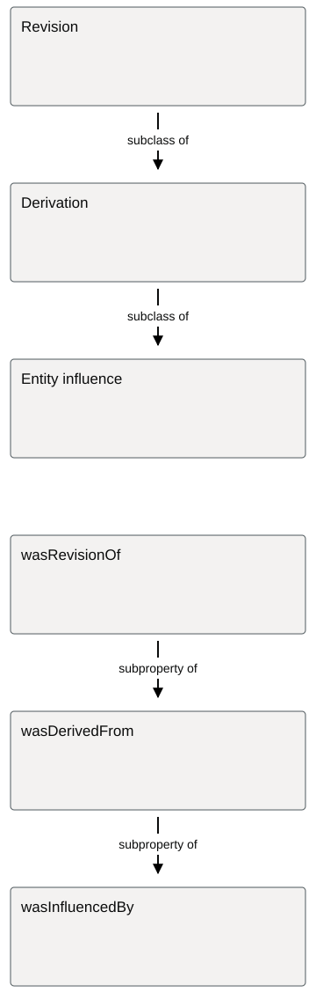

Follow the recorded provenance hierarchies
Retained metadata extension. Its graph is supplied as RDF or geospatial metadata; Markdown-core conformance is not asserted.
Question
How does the retained graph connect revisions to derivations and influences, and can it prove that a particular government document was revised?
Answer from the retained evidence
The class path is Revision → Derivation → Entity influence. The property path is wasRevisionOf → wasDerivedFrom → wasInfluencedBy. These are four recorded hierarchy assertions. They describe vocabulary relationships; the fixture contains no government document instance or revision event.
Start with Revision, inspect its parent, then follow the separate property hierarchy. Check the source triples before using the vocabulary in an answer. The existing W3C source and authority fields are retained in the evidence.
Complete retained graph
6 records; 4 directed assertions.

Every arrow is a retained assertion. The complete records and assertions are in the evidence file.
- Inspect Revision in Reader
- Inspect Derivation in Reader
- Inspect Entity influence in Reader
- Inspect wasRevisionOf in Reader
- Inspect wasDerivedFrom in Reader
- Inspect wasInfluencedBy in Reader
Limits of this answer
- This is a retained fragment, not the complete PROV-O ontology.
- A hierarchy path is not an assertion that a particular document was revised.
- The diagram shows the four recorded edges; no transitive edge is added.
Inspect or use the evidence
Complete worked-question evidence · Context for an AI client · Replay the record journeys · Authored question
- data/manifest.json —
338a25a35e94ea3fab127f01c52bc26a69fa9a075645d5b7b3561fd680b8fec7 - data/ontology.json —
79050592a1d38d57f8d3c758c96cce6f6745af5e3e30ea2a2d444cc5c1cc2bb0 - data/records.json —
9f251a535ccdafcffc7c9ce1c8179793a9e9bde19796588f83efa96787558897 - data/relationships.json —
03ad86354c6665d1041fcea7a041ed55b778e9eefb26e3f74c57a659a8b950e5 - okf-explorer.json —
b45b3f8a271a3fb90de77f4700410131e712d6f8bc66b8224d7cffa6b055f545 - source.nt —
d7083786dd95a3fbe83f199133198419f1ab31ae5c91cb265907f1f824149962